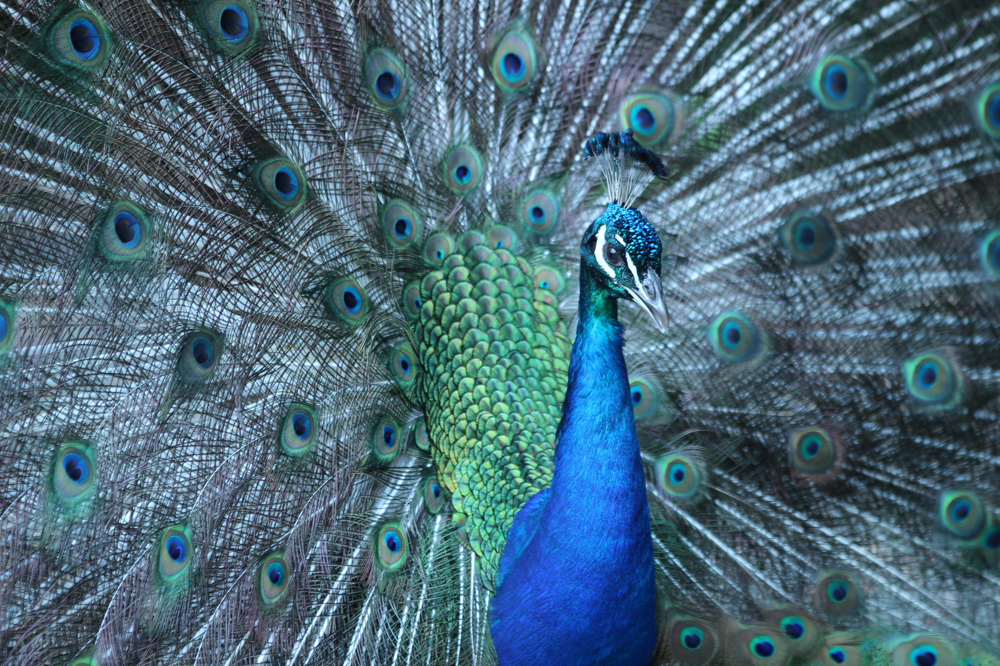
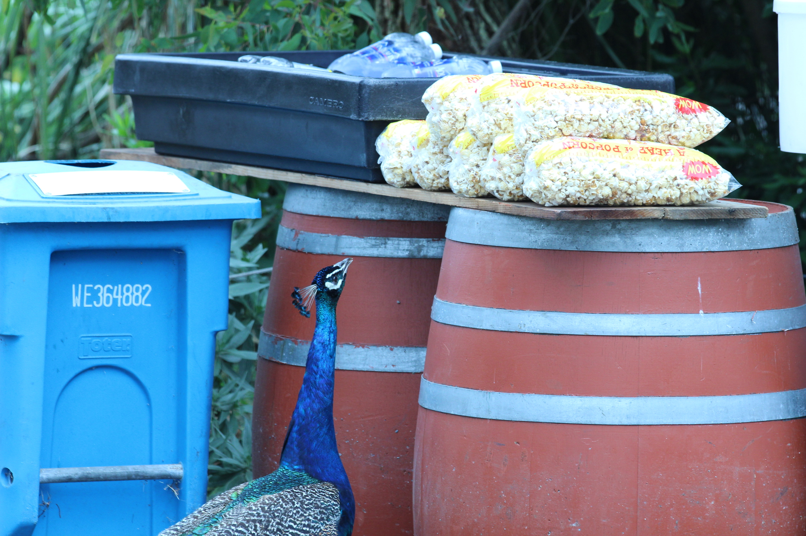

Caught this guy wandering around the San Francisco Zoo back in July 2013. He spotted a female near the train station and gave all the visitors a good show.
If you are looking to find peacocks wandering around San Francisco don't need to look any further than the San Francisco Zoo. Caught this second guy trying to snag some popcorn.
